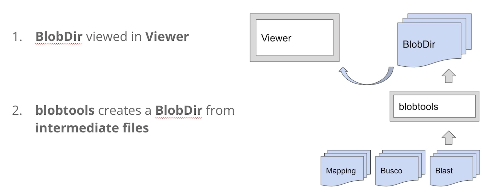

Session Materials¶
Introduction to BlobToolKit¶

Demo 1¶
When you launch the Gitpod workspace, these tasks have already been done for you:
- Conda/mamba has been installed
- BlobToolKit (BTK) viewer and api docker containers are already running with an example dataset
- /workspace/glClaSqua9 folder is ready with the assembly fasta file and mapped reads, blast hits, busco files, etc
Overview¶
We are going to work with an initial PacBio HiFi genome assembly of a sample of Cladonia squamosa, the dragon cladonia lichen.
- Explore the Gitpod interface
- Explore the BTK viewer
- Explore the input files
- Install BTK command line tools
- Create a blobdir
- Add read depth data to the blobdir
- Add blast hits to the blobdir
- View the blobdir in the BTK viewer
Details¶
-
Explore the Gitpod interface
- left: file browser
- top right: preview window / editor
- bottom right: linux terminal
-
Explore the BTK viewer
- the plot represents contigs in a genome assembly
- each circle is a contig, the size is proportional to the length
- the X axis is GC content of contig
- the Y axis is the sequencing coverage or read depth of that contig
- the colours are best blast hits
-
Explore the input files
Tip: uselessto quickly check what large files contain -
Install BTK command line tools
You should see a bash prompt beginning with[btk], and if you typeblobtoolsyou should see some help text -
Create a blobdir
The first step is to create a yaml file with some very minimal information.
In the text editor that opens top right, paste in this information and save it: Now, run this command to create a new folder: glClaSqua9_blobdir And take a look at the contents of glClaSqua9_blobdir -
Add read depth data to the blobdir
To add the sequencing coverage or read depth for each contig from a bam file to the same blobdir:
-
Add blast hits to the blobdir
We've now got the GC (X axis) and Cov (Y axis), so all we need is some way of colouring the contigs by their best hits to known databases. The precomputed/diamond folder has diamond blast hits in a tabular format, so we can add that.
But this time we need one additional input - the NCBI taxonomy - because BTK needs it to extrapolate hits at different taxonomy levels (such as phylum, class, order, etc)
Now we can add the diamond blast hits, telling BTK to get additional taxonomy information from this folder: -
View the blobdir in the BTK viewer
Move the blobdir into a folder that has all the blobdirs:
Send an instruction to the BTK API to reload and reindex that folder: Refresh the browser top right, and click on the new dataset: glClaSqua9_blobdir. By default, BTK viewer shows binned plots if there are more than 2000 contigs, so to get contigs plotted as circles, click on Settings > shape > circle
Exercise¶
Add the other diamond blast hit file in ./precomputed/diamond/glClaSqua9.diamond.reference_proteomes.out. Hint: change the blobtools add --hits command above by changing the input filename, and also change the taxrule to --taxrule bestsumorder_blastx. If you don't change the taxrule name, blobtools will assume you are referring to the same field, and will not overwrite it.
Solution
cd /workspace/glClaSqua9
blobtools add \
--hits ./precomputed/diamond/glClaSqua9.diamond.reference_proteomes.out \
--taxrule bestsumorder=bestsumorder_blastx \
--taxdump ./taxdump \
./glClaSqua9_blobdir
cp -r glClaSqua9_blobdir /workspace/btk_example/src/data/example/
curl $(gp url 8000)/api/v1/search/reload/testkey
Demo 2¶
You can add any categorical value to a contig, it does not have to be a blast hit.
For example, the deep-learning based tool tiara can very rapidly estimate if a contig is a eukaryote, bacteria, or organelle.
So, to very quickly assess if your eukaryotic genome assembly has bacteria in it, you could colour it using tiara. In this demo we install tiara, run tiara, and add the tiara categories to BTK.
-
Install tiara:
-
Run tiara:
-
Add tiara results to blobdir:
- Copy the blobdir and update the BTK API
Demo 3¶
We can add other file types as well:
-
BUSCO full_table.tsv
-
Numeric fields
-
Copy the blobdir and update the BTK API